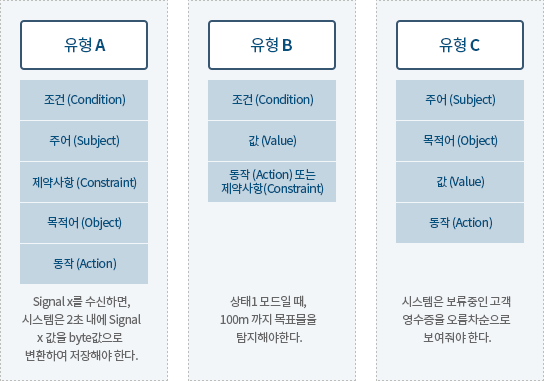

1. 요구사항 명세 활동
솔루션이 어떻게(How) 수행될 것인가 보다는 무엇(What)을 수행할 것인가에 초점을 두고 고객 또는 사용자의 요구들을 솔루션 개발에 있어 동일하게 이해하게끔 하는 것
요구사항 명세서란(Requirement Specification)
- 요구사항에 대한 공식 문서
- 참여자들 사이의 의사소통 수단 제공
- 사용자, 분석가, 개발자 및 테스터들에게 공동의 목표 제시
- 자연어나 정형언어 또는 그래픽 형태로 기술
- 명확한 이해와 수행할 기능의 완전한 기술
- 관점에 대한 다른 표현 사이에 일치성과 상호참조 확인
- 생명주기의 다음 단계 자료로 사용
- 설계, 검증 또는 테스트 계획 수립을 위한 기초 토대 마련
| 설계 | 요구사항 |
|---|---|
Solution 목표달성을 위한 해결방법 기술 “어떻게 수행될 것인가” |
추상화 - 시스템이 이루어야 할 목표 기술 “무엇을 수행할 것인가” |
|
HOW it is to be provided “기술적 요소를 포함하는가?” “특정구조나 알고리즘을 기술하는가?” |
WHAT is needed “해당 요구사항이 왜 필요한가? |
|
|
요구사항 명세 절차
| 기능 요구사항 명세 |
|
|---|---|
| 비기능 요구사항 명세 |
|
2. 요구사항 명세 가이드
어떻게 작성해야 하나
-
고객 관점의 명세
- 고객과 개발자가 이해하기 쉽게 작성한다
- SRS의 Reader가 누구인가?
- 그들에게 적합한 표현방식은 무엇인가?
- 최신유행을 피한다 전문가의 자기중심적 특정 기법
- 이해하기 쉽고 배울 필요가 없는 표현기법을 사용 : 자연어, Diagram
- 조직의 실제와 요구사항작성자/독자가 사용하는 표현에 의존
- 고객과 개발자가 이해하기 쉽게 작성한다
-
고객 관점의 명세 → 시나리오 기반 요구사항 기술
- 유즈케이스 기술서 (Use Case Description)
-
읽고 이해하기 쉬운 표현 사용
- 긍정적인 표현을 사용한다.
- 부정적인 요구사항은 긍정의 의미로 표현한다.
- 다중 부정표현을 피한다.
- 능동적인 표현을 한다.
- 요구사항에 충분한 정보를 제공한다.
- Model과 Picture를 포함한다.
- 긍정적인 표현을 사용한다.
-
명확한 표현을 사용
- 모호한, 다중의미를 가지는 용어를 피한다.
- usually, generally, often, normally, typically, user friendly, efficient, flexible, maximize, minimize, improved, easy, simple
- 일관성 있는 용어를 사용한다.
- Glossary 기술: 조직, 도메인의 표준용어사용
- 요구사항범위를 명확하게 한다.
- A/B : "A 그리고B", "A 또는 B", etc (... 등 등)
- Support vs. provide
- 모호한, 다중의미를 가지는 용어를 피한다.
어느정도 상세하게 작성해야 하는가
상세함이 덜 요구된다 |
상세함이 더욱 요구된다 |
|---|---|
|
|
좋은 요구사항(well defined) 명세속성
명세속성 |
설명 |
|---|---|
1. 정확성 (Correctness) |
|
2. 명확성 (Unambiguous) |
|
3. 완전성 (Completeness) |
|
4. 일관성 (Consistency) |
|
5. 특이성 (Peculiarity) |
|
6. 검토가능 (Verifiability) |
|
7. 수정용이성 (Modifiability) |
|
8. 추적성(Traceability) |
|
9. 이해가능성(Understandability) |
|
요구사항 구조(구문)

피해야 할 단어(용어)
- 최상급/비교급 (가장좋은, 최고의, 보다 높은 품질, 보다 나은 기능 등)
- 주관적 용어 (사용하기 쉬운, 효과적인 등)
- 모호한 대명사 (그것, 저것, 이것 등)
- 모호한 부사와 형용사 (거의, 항상, 눈에띄게, 최소의, 가능 하다면, 적절하게 등)
- 부정적 표현 (솔루션이 제공하지 못하는 것에 대한 구문)